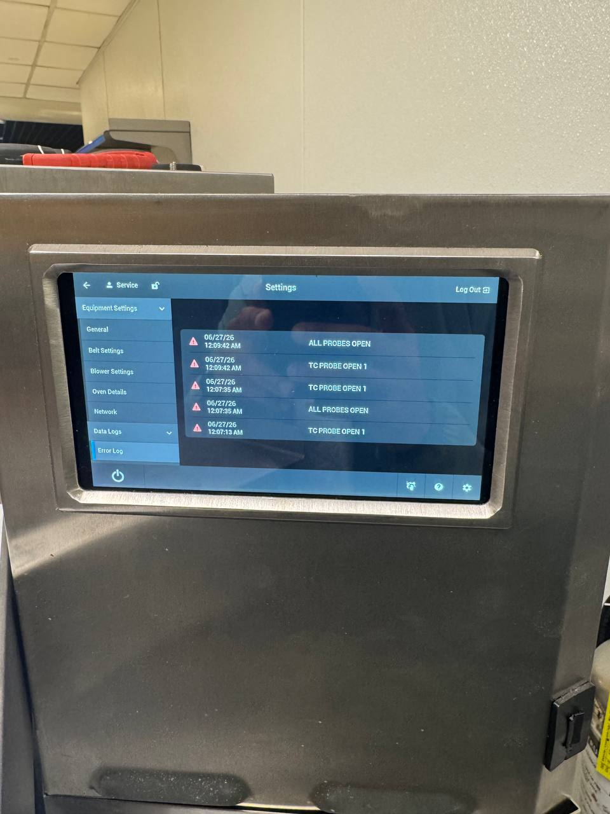

TurboChef F7 Error Code — RTD Failure (Temperature Probe)
An F7 code means the oven's control board can no longer get a reliable reading from its temperature probe, the sensor that measures the cooking cavity. The oven locks out with F7 rather than cook with an unreadable temperature. Authorized TurboChef Service Provider. Factory-trained technicians, genuine OEM parts. Serving Seattle, Bellevue, Tacoma, and the greater Puget Sound.
Last updated:
What Does the TurboChef F7 Error Mean?
On a TurboChef speed oven, the error code F7 means RTD failure, referring to the RTD (resistance temperature detector), the probe that measures the temperature inside the cooking cavity so the control board can hold the oven at the right heat. When the control board can no longer get a reliable reading from that circuit, it stops cooking and locks out with F7 rather than risk undercooked or overcooked food.
What that means in practice: the oven may power up but refuse to run a full cook cycle, or it may error out partway through. The code often returns after a power cycle because the underlying condition hasn't changed, and it can drive other confusing symptoms, like an oven that behaves differently between warm-up and cook.
F7 is a fault that needs professional diagnosis. The probe circuit is tied into the oven's control and heating systems, and more than one kind of fault can present the same code. A factory-trained technician verifies the whole circuit before quoting any repair, and uses genuine OEM parts. Call FixIt Expresso at 425-547-0200. We typically fix F7 in a single visit.

Need the full code list? See our TurboChef F1–F10 error code guide to identify any fault before you call. We arrive prepared with the right parts.
Why F7 Needs an On-Site Diagnosis
More than one part of the probe circuit can produce an F7 code, and the code alone doesn't say which, a wiring fault can look identical to a failed sensor. That's why the whole circuit gets checked before anything is quoted, not just the sensor.
Heat stress in high-use kitchens
Probes sit in the hottest part of the oven. On high-volume units in continuous service, heat stress is constant, which is why F7 shows up so often on busy Sota (NGO) installs.
Age on legacy platforms
On older i3, i5, and HhD units, F7 can appear alongside age-related wear elsewhere in the heating system. A full diagnosis catches what a code alone can't.
F8 (High Limit Tripped) is F7's closest relative in the fault list. Where F7 is a failed temperature reading, F8 is a tripped safety limit. Both shut the oven down on a heating-system problem, and both need a factory-trained technician to sort out properly. Call 425-547-0200 for either.
How We Fix a TurboChef F7 Error
F7 doesn't wait for a convenient time to show up. Here's what happens whether it's an early prep-shift check or a mid-service emergency call:
-
Tell us the code and model
Note the F7 (or RTD) code on the display and your model (Sota, Bullet, Encore, i3, i5, NGC, or another) when you call. That's usually enough for the tech to show up with the right OEM part already in hand.
-
Same-day or scheduled visit
Emergency same-day service is available for a down oven during service hours. Non-urgent F7 repairs can be scheduled, or handled via drop-off for models like Sota and NGO.
-
On-site diagnosis
Our factory-trained technicians confirm the F7 fault, test the probe circuit and related heating components, and quote the repair before starting work.
-
Repair with genuine OEM parts
Most F7 repairs are completed in a single visit, not a return trip after a part ships.
-
Tested before we leave
We run a full cook cycle to confirm the temperature reads correctly and the fix holds under real load before we consider the job done.
TurboChef Models and the F7 Fault
F7 can appear across the TurboChef lineup. Here's how it plays out on the platforms we service most:
Sota (NGO)
F7 is one of the most common faults on the Sota, alongside blower motor issues (F1) and control-board communication errors (F10) on older units. Drop-off service is available for Sota and NGO models.
Bullet (ENC-1618B) / Encore
Magnetron failures (F3) and high-limit trips (F8) are the most common faults on these compact-cavity models, with RTD issues appearing as units age. Heat builds fast in the small cavity, so keeping vents clear matters.
NGC
These models most often fail on magnetron current faults (F3), airflow restrictions (F5, F6), and door monitor issues (F4). They have long service lives but need regular preventive maintenance.
i3 / i5
The i3 and i5 more often show F2 (cook temp low), F6 (EC temp high), and F9 (belt wear). F7 can appear on older units as probe and heating components age together.
HhD (HHD-1002B), ECO (ECO-1002A), Fire, Tornado, C3 / C4 / HhC
Legacy and specialty platforms we continue to support with OEM parts and factory-trained diagnosis, including double-batch (HhD) and conveyor (HhC) configurations.
Every F7 call starts with an on-site diagnosis and a clear quote before any work begins. Call 425-547-0200.
Preventative Maintenance That Prevents F7
F7 rarely happens without warning signs first, a maintenance visit usually catches them before it turns into a lockout:
Probe and temperature checks
Temperature readings can drift out of spec before a fault locks the oven out. A scheduled inspection catches the creeping inaccuracy early, so the underlying cause can be addressed on your timeline, not the oven's.
Air filter & vent checks
Restricted airflow is behind more faults than any single component failure. It's what drives F6-type over-temperature codes on i3/i5 units, and it accelerates heat stress on probes and other cavity components. Clean filters and clear vents are the cheapest insurance against a mid-shift breakdown.
Door seal and interlock checks
A worn door seal doesn't just waste energy. It's one of several things that can eventually lead to F4-type door-monitor faults. Checking it on a schedule is faster and cheaper than an emergency call.
TurboChef F7 Error FAQ
What does TurboChef error F7 RTD mean?
F7 means RTD failure, referring to the RTD probe that measures the cooking cavity temperature. When the control board can no longer get a reliable reading from that circuit, the oven locks out with the F7 code rather than cook blind. It requires professional diagnosis and the correct OEM part. Call 425-547-0200.
What causes a TurboChef F7 error?
F7 can stem from more than one part of the probe circuit, the code alone doesn't say which. It appears most often on high-use units like the Sota (NGO). A factory-trained technician verifies the actual cause on-site rather than guessing from the code.
Will a TurboChef F7 error clear on its own?
No. A power cycle may clear the display temporarily, but F7 returns because the underlying fault has not changed. The RTD circuit needs professional diagnosis so the root cause (not just the code) is fixed. Call FixIt Expresso at 425-547-0200.
How quickly can you fix a TurboChef F7 error?
Most F7 repairs are completed same-day or within 24-72 hours. We use genuine OEM parts and offer emergency same-day service. Call 425-547-0200.
Which TurboChef models show the F7 error?
F7 is most common on Sota (NGO) models, and can appear across the TurboChef lineup. We repair F7 on all current and legacy TurboChef models: Sota (NGO), Bullet, Encore, HhD Double Batch, i3, i5, NGC, ECO, Fire, and more.
Seeing F7 on Your TurboChef?
Call now or request service online. We respond fast, same-day emergency service available for a down oven.
📞 Call 425-547-0200 Request ServiceTurboChef F7 RTD repair across the Puget Sound: Seattle • Bellevue • Redmond • Kirkland • Renton • Kent • Tacoma • Everett • Auburn • Federal Way. We're a mobile service based in Renton, our technicians come to your kitchen within roughly 80 miles of Seattle. See TurboChef repair across the Puget Sound for the full picture.